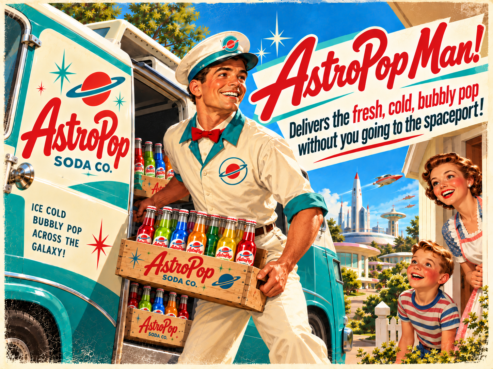

1448×1086
1448px, quality 80
1448px, quality 90
960px, quality 80
640px, quality 80

1448px, quality 55, 4:4:4 chroma
Compare lettering/logo edges, faces, bottle labels, gradients, and halftone texture at the same displayed width. This is a review aid, not a declaration of artistic approval. See manifest.json for measured bytes and SHA-256 values.
